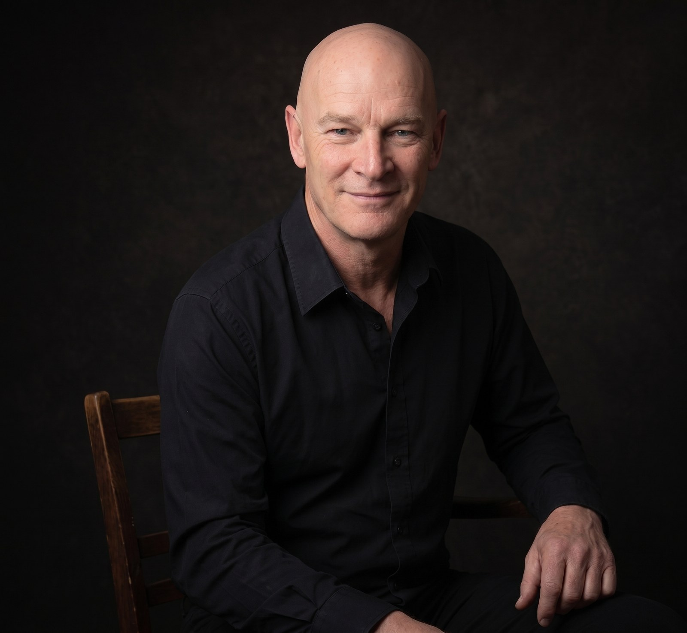

Local first. Moving toward local only.
Wollongong. Two DGX Sparks and a Geekom A9 Max. I run the models here. The benches are on LocalMaxxing. Some of the tools are already on GitHub.
My PhD focuses on psychophysiological changes to music at UoW. How heart, skin, and EEG answer a change in the music. I use MATLAB and the usual processing stack. My interests are research, family, motorbikes, and anything that catches my interest.
github.com/scottleimroth · PhD candidate, School of Psychology, University of Wollongong
Counts from localmaxxing.com/en/user/scottleimroth and github.com/scottleimroth, 16 Aug 2026. Not invented for this page.
Published benches
Personal bests already on LocalMaxxing. Spark rows are single-stream, idle box. Geekom rows are WSL2 + Vulkan on the Ryzen AI 9 HX 370 / Radeon 890M.
Harness notes live in geekom-benchmarks. House chat is now Qwen3.8-27B NVFP4 on Spark 1; that row is not on LocalMaxxing yet.
On GitHub
A mixed bag on purpose: benches, house apps, hardware, research. The long writing stays on scottleimroth.com.
geekom-benchmarks
Local LLM inference on AMD Strix Point / Radeon 890M. First Ryzen AI 9 HX 370 rows on LocalMaxxing.
berrima-diesel-app
Diesel price tracker and 4WD / caravan / motorhome route planner for Berrima Diesel.
tempo-rhythm-perception-study
Public info for the tempo / rhythm perception study. The PhD lives next door.